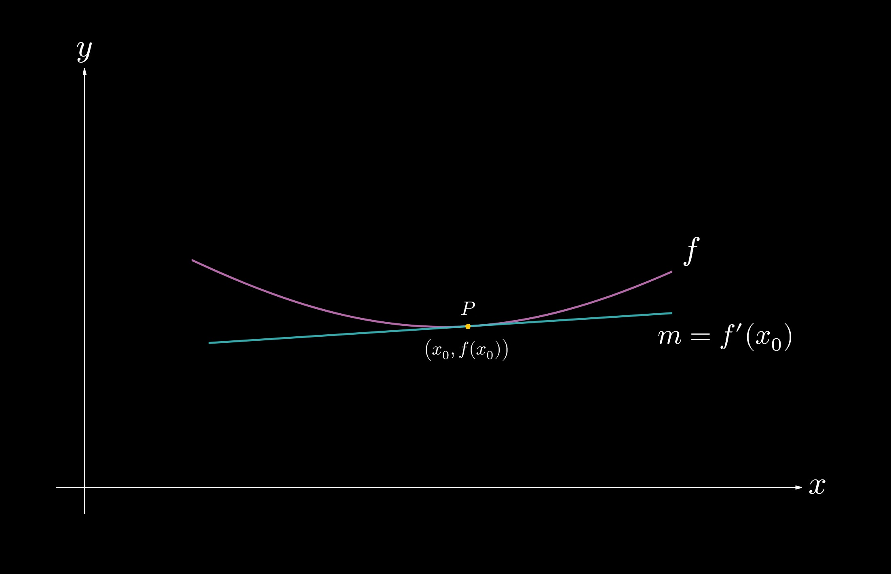
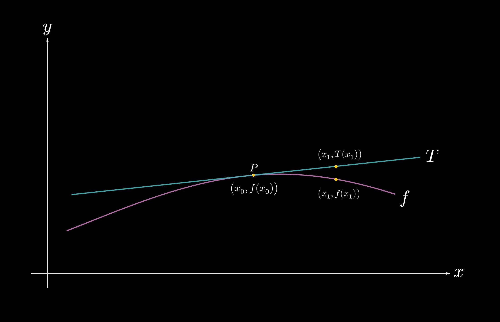

2.2 — Finding Derivatives
In section 2.1, we introduced differentiation, which we defined as the instantaneous rate of change at a given instant. Now, as necessary, it is time to learn how to find derivatives. There are various rules for differentiation, whose derivations will be featured at the end of the section.
We first need to formulate an equation for the tangent line to a function \(f\) at a given point \((x_0, f(x_0))\). Recall, using the point-slope form for a line, that $$ y - y_0 = m(x - x_0).$$ For a tangent line, the derivative represents its slope at a given point; that is, \(\displaystyle m = f'(x_0)\). We can therefore rewrite the formula as

Fig. 2.2-1. The tangent line to \(f\) at the point \(P(x_0, f(x_0))\) is shown. The slope of the tangent line is given by \(f'(x_0)\).
We will be using this formula for linear approximations, which we will discuss briefly in this section.
The first fundamental rule is the power rule, shown below.
$$ \frac{\textrm{d}}{\textrm{d} x} (x^n) = nx^{n - 1}, $$
where \(n\) is a constant. Take, as examples, the following derivatives to illustrate this rule. $$ \frac{\textrm{d}}{\textrm{d}x}(x^3) = 3x^2. $$ $$ \frac{\textrm{d}}{\textrm{d}x}(x^7) = 7x^6. $$ $$ \frac{\textrm{d}}{\textrm{d}x}(x^{10}) = 10x^9. $$ $$ \frac{\textrm{d}}{\textrm{d}x}(x^{\frac{3}{2}}) = \frac{3}{2}x^{\frac{1}{2}}. $$Write the equation of the line tangent to the graph of \(\displaystyle f(x) = x^2\) at \(\displaystyle x = 5\).
We will use the equation $$ y - f(x_0) = f'(x_0) (x - x_0), $$ where \(\displaystyle x_0 = 5\) in this case.
We therefore have $$ y - 25 = f'(5)(x - 5), $$ and we now need \(f'(5)\). From the power rule, $$ f'(x) = \frac{\textrm{d}}{\textrm{d} x} \left(x^2\right) = 2x^{2-1} = 2x. $$ $$ f'(5) = 2(5) = 10.$$
Therefore, the equation of the tangent line is $$ y - 25 = 10(x - 5). $$
Let us now feature the fundamental rules of differentiation. Using the power rule, we can show that the derivative of any constant is \(0\). Suppose that \(k\) is a constant. Then, $$ \frac{\textrm{d}}{\textrm{d}x} \left( k \right) = 0. $$ Furthermore, if there is a constant within the expression that we are differentiating, then we can pull it out. That is, $$ \frac{\textrm{d}}{\textrm{d} x} \Big(k f(x)\Big) = k \frac{\textrm{d}}{\textrm{d} x} \Big(f(x)\Big). $$ The linearity of differentiation shows that
Evaluate \(\displaystyle \frac{\textrm{d}}{\textrm{d}x} \left(2x^3 - 7x^2 + 9x - 16\right)\).
From the linearity of differentiation, we can apply the derivative operator to all of the terms in the polynomial expression. Doing so yields $$ \frac{\textrm{d}}{\textrm{d}x} \left(2x^3 - 7x^2 + 9x - 16\right) = 2(3)x^2 - 7(2)x + 9 - 0$$ $$ = \bbox[border: 2px solid white, 2pt]{6x^2 - 14x + 9.} $$
Now let us derive some key derivatives, one of which is the derivative of \(\sin(x)\). Applying the limit definition of \(\sin'(x)\) gives
\(\displaystyle \sin'(x) = \lim_{h \to 0} \frac{\sin(x+h) - \sin(x)}{h}\). \((1)\)
Using the addition identity that \(\displaystyle \sin(\alpha + \beta) = \sin(\alpha) \cos(\beta) + \cos(\alpha) \sin(\beta)\), we can rewrite the difference quotient as\(\displaystyle \sin'(x) = \lim_{h \to 0} \frac{\sin(x)\cos(h) + \sin(h) \cos(x) - \sin(x)}{h} \). \((2)\)
Further rewriting yields\(\displaystyle \lim_{h \to 0} \frac{\sin(h) \cos(x)}{h} + \lim_{h \to 0} \frac{\sin(x) \cos(h) - \sin(x)}{h}\). \((3)\)
Notice that all of the terms with \(x\)'s are constants and can be factored out, which will give\(\displaystyle \cos(x) \lim_{h \to 0} \frac{\sin(h)}{h} + \sin(x) \lim_{h \to 0} \frac{\cos(h) - 1}{h} \). \((4)\)
Recall, from 1.7 (Important Limits), that \(\displaystyle \lim_{h \to 0} \frac{\sin(h)}{h} = 1\) and \(\displaystyle \lim_{h \to 0} \frac{1 - \cos(h)}{h} = 0 \). Substituting these values gives\(\displaystyle \cos(x) \underbrace{\lim_{h \to 0} \frac{\sin(h)}{h}}_{1} - \sin(x) \underbrace{\lim_{h \to 0} \frac{1 - \cos(h)}{h}}_{0} \), \((5)\)
from which we obtain\(\displaystyle \sin'(x) = \cos(x)\).
$$\tag*{$\blacksquare$}$$Now we will derive the derivative of \(\cos(x)\). Applying the limit definition for \(\cos'(x)\) gives
\(\displaystyle \cos'(x) = \lim_{h \to 0} \frac{\cos(x+h) - \cos(x)}{h} \). \((1)\)
We can use the addition identity for cosine, \(\displaystyle \cos(\alpha + \beta) = \cos(\alpha) \cos(\beta) - \sin(\alpha) \sin(\beta) \), to rewrite the difference quotient as\(\displaystyle \cos'(x) = \lim_{h \to 0} \frac{\cos(x) \cos(h) - \sin(x) \sin(h) -\cos(x)}{h} \) \((2)\)
and again as\(\displaystyle \cos(x) \lim_{h \to 0} \frac{\cos(h) - 1}{h} - \sin(x) \lim_{h \to 0} \frac{\sin(h)}{h} \). \((3)\)
Now we can simplify the expression using the fundamental limits, as we did with the derivation of \(\sin'(x)\):\(\displaystyle -\cos(x) \underbrace{\lim_{h \to 0} \frac{1 - \cos(h) }{h}}_{0} - \sin(x) \underbrace{\lim_{h \to 0} \frac{\sin(h)}{h}}_{1} \), \((5)\)
and we see that$$ \cos'(x) = -\sin(x). $$
$$\tag*{$\blacksquare$}$$The last transcendental function whose derivative we will derive is \(e^x\). Starting from the limit definition, we can write
\(\displaystyle \left(e^x\right)' = \lim_{h \to 0} \frac{e^{x+h} - e^x}{h} \), \((1)\)
which we can rewrite, using exponent properties, as\(\displaystyle \lim_{h \to 0} \frac{e^x e^h - e^x}{h} \). \((2)\)
We notice here that the \(e^x\) is a constant, so we can factor it out, giving\(\displaystyle e^x \lim_{h \to 0} \frac{e^h - 1}{h} \). \((3)\)
We also know that \(\displaystyle \lim_{h \to 0} \frac{e^h - 1}{h} = 1\), leaving us with$$ (e^x)' = e^x. $$
$$\tag*{$\blacksquare$}$$Evaluate \(\displaystyle \frac{\textrm{d}}{\textrm{d}x} \left( -4\cos(x) + 2\sin(x) - k^2 e^x + \frac{1}{2}x^4 \right)\), where \(k\) is a constant.
From the linearity of differentiation, we can apply the derivative operator to all of the terms in the polynomial expression. Doing so yields $$ -4 (-\sin(x)) + 2(\cos(x)) - k^2 (e^x) + \frac{1}{2}(4)x^3 $$ $$ = \bbox[border: 2px solid white, 2pt]{4\sin(x) + 2\cos(x) - k^2 e^x + 2x^3.} $$ Notice that, because \(k\) was a constant, we left \(k^2\) alone.
Now let us discuss linear approximations. Consider, in Fig. 2-2.2, the function \(f\). The function \(T\) represents the tangent line to \(f\) at the point \(P(x_0, f(x_0))\). 
Fig. 2-2.2. The tangent line to the function \(f\) at the point \(P(x_0, f(x_0)\), \(T\), is drawn. Its approximation of the value \(f(x_1)\) is \(T(x_1)\).
The equation of the tangent line, \(T\), is given by $$ T(x) = f(x_0) + f'(x_0)(x - x_0). $$ We can use the tangent line to approximate nearby values of \(f\), such as the value of \(f(x_1)\), as shown in Fig. 2-2.2. These numeric approximations are useful for values close to \(P\) but start to lose accuracy for points farther away from it. Using the tangent line, the approximation for \(f(x_1)\) is given by $$ f(x_1) \approx T(x_1) = f(x_0) + f'(x_0) (x_1 - x_0), $$ which is derived from the point-slope form of a line that we discussed at the start of the section.Use a tangent line to the function \(y = \sqrt{x}\) at \(x = 16\) to approximate the value of \(\sqrt{17}\). Then, use a calculator to determine the percent error in the approximation. (The true value of \(\sqrt{17} \approx 4.123\).)
The equation of the tangent line to \(y = \sqrt{x}\) at \(x = 16\) is given by $$ y = \sqrt{16} + y'(16)(x - 16). $$ We now need \(y'(16)\). We can see, from the product rule, that $$ \frac{\textrm{d}}{\textrm{d} x} \left(\sqrt{x}\right) = \frac{\textrm{d}}{\textrm{d} x} \left(x^{\frac{1}{2}}\right) = \frac{1}{2} x^{-\frac{1}{2}} = \frac{1}{2 \sqrt{x}}. $$ $$ y'(16) = \frac{1}{2 \sqrt{16}} = \frac{1}{8}. $$ Thus, using the tangent line approximation yields $$ \sqrt{17} \approx 4 + \frac{1}{8}(17 - 16) = \bbox[border: 2px solid white, 2pt]{4.125.} $$ The percent error is given by $$ \frac{\left|\textrm{observed} - \textrm{expected} \right|}{\textrm{expected}}$$ $$ = \frac{\left| 4.125 - 4.123 \right|}{4.123}$$ $$ = 0.000485 $$ The estimate of \(\sqrt{17}\) using the tangent line to \(\sqrt{x}\) at \(x = 16\) yielded an estimate with an error of \(0.0485\) percent—not bad!
SECTION SUMMARY